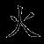

Chương 4

Tiếng chuông leng keng cho thấy số lượng người hành hương vẫn đang đông dần lên.
“Vận may đến rồi,” Jack nói khi thấy bốn người trong đoàn đang tiến về nhà kho.
“Cậu lo nấp cho kĩ vào,” Miyuki nhắc nhở.
Nghe vậy, Jack bèn lui vào sau chồng két rượu trong góc.
Quan sát kĩ không có võ sĩ xung quanh, Miyuki quyết định mở cửa. “Nhớ làm theo những gì tớ đã nói nhé, Yori.”
Nhà sư nhí gật đầu miễn cưỡng. Yori không đồng tình với kế hoạch của Miyuki, nhưng cũng phải thừa nhận rằng chẳng còn cách nào khác. Cậu nhanh chóng bước đến chỗ đoàn người hành hương, cúi đầu thi lễ rồi nói, “Chủ nhân chúng tôi có lòng kính gửi o-settai. Hi vọng có thể đổi chỗ rượu hảo hạng này lấy những lời chúc phúc từ các vị.”
Do không được phép từ chối, và vì cũng chẳng có lí do gì để làm vậy, bốn người hành hương liền theo Yori vào sau nhà kho, nơi Saburo đã đợi sẵn. Hai người đầu tiên là một cặp anh em lớn tuổi, người thứ ba là một phụ nữ trung niên, và cuối cùng là một anh chàng gầy gò như que củi.
Jack thấy Miyuki đưa cho họ mỗi người một cốc rượu đầy. Cả bốn người đều hoan hỉ đón lấy. Hai người đàn ông lớn tuổi uống hết rất nhanh, thậm chí còn thèm thuồng liếm mép. Theo thông lệ, những người hành hương bắt đầu chắp tay khấn, “Namu Daishi Henjo Kongo…”
Yori đã nói trước với cả nhóm rằng họ sẽ lặp lại câu này ba lần trước khi giao một tấm bùa osame-fuda thể hiện lòng cảm kích.
Nhưng chuyện đó đã không kịp xảy ra.
Người phụ nữ trung niên ngất xỉu đầu tiên, cốc rượu trên tay rơi xuống sàn vỡ tan tành. Saburo nhanh chóng bước đến nhẹ nhàng đặt bà xuống đất. Tiếp theo đến lượt hai người đàn ông lớn tuổi, họ đổ gục như kiểu búp bê không còn ai điều khiển. Người thứ tư tỏ ra rất hoảng loạn với tình cảnh trước mắt, anh ta vội vàng xoay người định chạy đi cầu cứu.
Tuy nhiên Miyuki đã dự trù sẵn, cô nhanh chóng ấn vào huyệt đạo đằng sau cổ đối tượng khiến anh chàng lịm đi dưới chân.
“Cậu đã hứa sẽ không làm tổn thương họ cơ mà!” Yori phản ứng.
“Yên tâm đi,” Miyuki tươi cười trấn an. “Cùng lắm lúc tính dậy chỉ bị choáng một chút thôi.”
“Thế còn những người khác?” Jack bước ra từ chỗ ẩn nấp, ái ngại hướng về phía người phụ nữ và hai ông lão đang nằm.
“Tớ chỉ bỏ lượng độc vừa đủ để họ ngất đi trong vài giờ đồng hồ,” Miyuki giải thích. “Việc này đòi hỏi độ chính xác khá cao, chỉ cần thừa một chút cũng sẽ khiến họ mất mạng.”
“Làm tốt lắm, Miyuki!” Jack mãn nguyện sau khi nhận thấy các nạn nhân vẫn thở đều.
Bốn đứa lập tức cởi phục trang những người hành hương để mặc vào. Yori do thân hình nhỏ con nên trông khá buồn cười trong bộ đồ rộng thùng thình. Jack thì ngược lại - là một người nước ngoài, nó rõ ràng cao hơn hẳn so với người Nhật - may thay anh chàng ban nãy gầy gò nhưng lại cao.
Yori giúp Jack chỉnh lại tấm vải xanh. “Đây là wagesa, phần quan trọng nhất trong trang phục của các nhà sư, tượng trưng cho lòng thành tâm trước cửa Phật.” Yori lấy ra chuỗi tràng hạt. “Còn đây là nenju, bao gồm một trăm hạt bình thường và tám hạt bonno...”
“Hạt bonno là gì?” Jack cắt ngang, bởi nó biết việc tìm hiểu cặn kẽ thông tin về người mình cải trang là vô cùng quan trọng, vì điều đó ảnh hưởng trực tiếp đến khả năng cải trang có thành công hay không.
“Chúng đại diện cho bát chính đạo, con đường giải thoát khỏi bể khổ Samsara. Một tín đồ Phật giáo thì tuyệt đối không thể thiếu wagesa và nenju.”
Jack nhặt chiếc gậy gỗ giơ lên. “Thế chiếc chuông này nghĩa là gì?”
“Dạng như omamori, lá bùa may mắn thầy Yamada từng trao cho cậu,” Yori trỏ chiếc túi đỏ gắn trên hành lí của Jack để giải thích. “Dùng để cầu mong đi đường được thuận lợi.”
“Thế thì chẳng mấy tác dụng rồi,” Saburo phì cười nhìn bốn nạn nhân đang nằm trên sàn. Nãy giờ anh chàng vẫn đang loay hoay ních cái bụng mỡ của mình vào bộ trang phục của một trong hai ông lão.
Yori trừng mắt nhìn thằng bạn báng bổ của mình rồi tiếp tục. “Cần đặc biệt lưu tâm đến gậy, vì nó đại diện cho linh hồn của Kobo đại sư, người mà những người hành hương này đang tưởng nhớ.”
Jack gật đầu rồi cẩn thận quan sát vật đang cầm trên tay. Có năm kí tự được khắc vào phần thân. Nhờ công Akiko, Jack không chỉ nói tiếng Nhật thuần thục mà còn hiểu kha khá về Hán tự. Nó hết sức bất ngờ khi nhận ra ý nghĩa của dòng chữ.

“Là Ngũ Đại!” Jack lập tức quay về phía Miyuki, lúc này cô đã thay xong y phục và đang tất bật kéo những người hành hương đi giấu.
“Trong Phật giáo thì chúng mang ý nghĩa khác,” Miyuki đáp qua loa rồi ném cho Jack cái nhìn đầy ý nhị, rõ ràng cô không muốn đề cập đến vấn đề này.
Jack lập tức im bặt. Nó được dạy về Ngũ Đại từ chính đại tổ sư Soke. Năm nguyên tố vũ trụ này chính là kim chỉ nam đối với ninja. Ngũ Đại hiện hữu trong mọi kĩ năng nhẫn thuật, thứ khiến họ luôn nguy hiểm và đáng sợ đối với các võ sĩ.
Cất chiếc gậy sang bên, Jack hướng sự chú ý sang chiếc túi trắng của những người hành hương. Bên trong có hương, đèn, kinh, tiền, mõ, sổ sách và rất nhiều bùa. Nó quyết định lấy quyển sổ ra để có chỗ cất đồ của mình vào.
“Cái đó thì không được,” Yori ngăn cản. “Sổ này dùng để thu thập con dấu từ các ngôi chùa họ đi qua, đồng thời cũng đóng vai trò giấy thông hành. Muốn đến Shikoku thì không thể thiếu nó được.”
Nghe lời Yori, Jack quyết định để quyển sách về chỗ cũ, rồi lấy bộ mõ ra, vừa đủ để cất món đồ quan trọng nhất - bản hải đồ vào trong. Bản hải đồ này không chỉ mang giá trị tinh thần rất lớn mà còn là chìa khóa nắm giữ cả vận mệnh. Ai có hải đồ, người đó sẽ thống trị con đường kinh doanh hàng hải. Jack và cha sẽ không để hải đồ lọt vào tay kẻ xấu, sự thật là nó vẫn đang mạo hiểm cả tính mạng để bảo vệ món đồ này.
Món đồ giá trị duy nhất còn lại ngoài cặp song kiếm ra chính là viên ngọc trai đen Akiko tặng ngày nó khởi hành đi Nagasaki. Sau lần bị rơi vào tay gian thương, viên ngọc được gắn thêm phần cặp bằng vàng, như vậy lại thành ra tiện vì Jack có thể dễ dàng gắn nó vào áo kimono. Vấn đề nằm ở chỗ bốn chiếc phi tiêu shuriken, bình chứa nước và lương thực dự phòng. Trong lúc Jack còn đang đắn đo thì Yori lấy tiền trong chiếc túi hành hương của mình ra đặt cùng với một ít gạo bên cạnh các nạn nhân đang ngất xỉu.
“Ơ, ai lại bỏ tiền? Với cả chỗ kia là lương thực của cậu mà?” Saburo thắc mắc.
“Tụi mình có phải quân trộm cướp đâu,” Yori nói ngay. “Còn gạo thì xem như là phần hậu tạ cho những người này vậy.”
Xấu hổ, Jack bèn lấy tiền ra khỏi túi kèm thêm hai cái bánh mochi đặt xuống. Saburo không nỡ rời xa đám bánh gạo nên để lại chiếc mũ có lỗ đạn thủng.
“Bán đi được khối tiền.”
“Tớ tưởng cậu định dùng nó để khoe với bố?” Jack ngạc nhiên hỏi.
“Cồng kềnh quá. Hơn nữa, nếu hôm nay bỏ mạng thì giữ lại có ích gì!”
“Mọi người nhanh lên,” Miyuki vừa giục vừa đặt bánh gạo của mình xuống. “Đám võ sĩ sắp tới rồi.”
“Vậy còn vũ khí tính sao đây?” Saburo giơ cặp song kiếm hỏi. “Người hành hương hiển nhiên không thể có món này rồi.”
“Tớ có ý này,” Jack lôi đống túi sau chồng két rượu nó nhìn thấy lúc ẩn nấp ban nãy ra nói. “Cho hết vào đây, quân lính sẽ nghĩ chúng là hàng hóa bình thường thôi.”
Thế là cả nhóm bèn cất vũ khí rồi đeo túi đội mũ rơm mở cửa. Bên ngoài, một toán võ sĩ đang lục soát nhà kho đối diện.
“Mình đi thôi!” Jack ra hiệu.
Bốn đứa nhanh chóng hòa vào đoàn người, riêng Saburo cầm thêm túi vũ khí. Lúc này, không khí chờ tàu xung quanh đang khá căng thẳng.
“Bước chậm lại,” Miyuki nói khi đến gần cảng.
“Nhưng mấy võ sĩ kia sắp đến nơi rồi!” Yori hoảng loạn.
“Dù chuyện gì xảy ra cũng không được dừng bước,” nữ sát thủ nói qua kẽ răng.
Hai tên lính đã ở rất gần, may thay chúng vẫn chủ yếu tập trung vào khu vực đường hẻm và nhà kho. Yori và Miyuki vượt rào trót lọt, nhưng một tên võ sĩ trong lúc vội vã lục soát đã vô tình va trúng phải Jack.
Hắn giận dữ trừng mắt nhìn.
“Sumimasen [2] ,” Jack cúi sát đầu tạ tội.
Miyuki và những người còn lại lập tức ở vào trạng thái báo động, cô đặt tay lên chiếc phi tiêu giấu trong áo, Saburo cũng sẵn sàng rút kiếm khỏi bao bất cứ lúc nào.
Tên võ sĩ bước tới, đoạn nhét tay vào đai lưng. Jack suýt nữa đã định bỏ chạy. “Không, đây là lỗi của ta,” võ sĩ lấy ra một đồng tiền xu rồi nói. “Xin hãy nhận đồng o-settai này.”
Sững sờ, Jack cầm tiền rồi bước được một bước thì chợt nhớ đến nghi lễ bắt buộc. Nó vội chắp tay niệm “Namu Daishi Henjo Kongo” ba lần, rồi lấy một lá bùa ra trao. Tên lính tỏ ra rất hài lòng, hắn nhanh chóng trở lại với công việc lục soát tìm tội nhân, mà không hề hay biết đối tượng chỉ cách mình có vài bước chân.